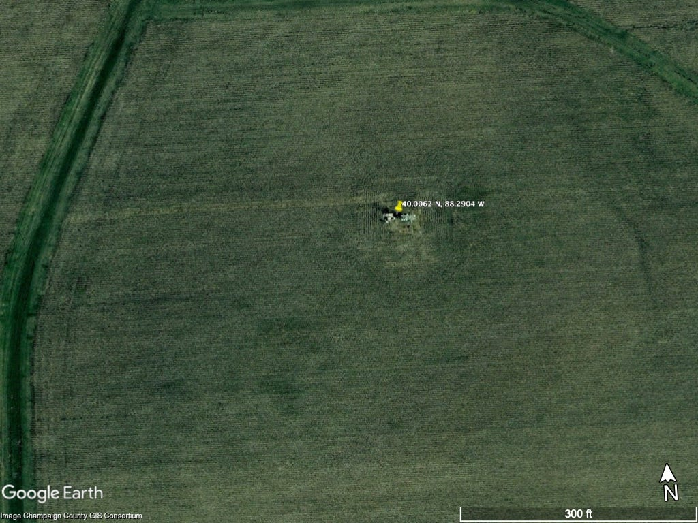
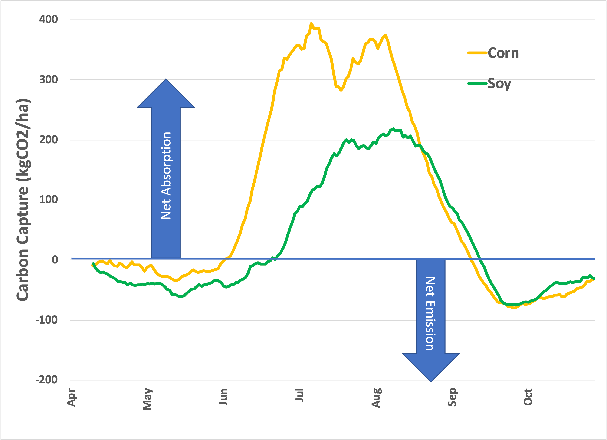
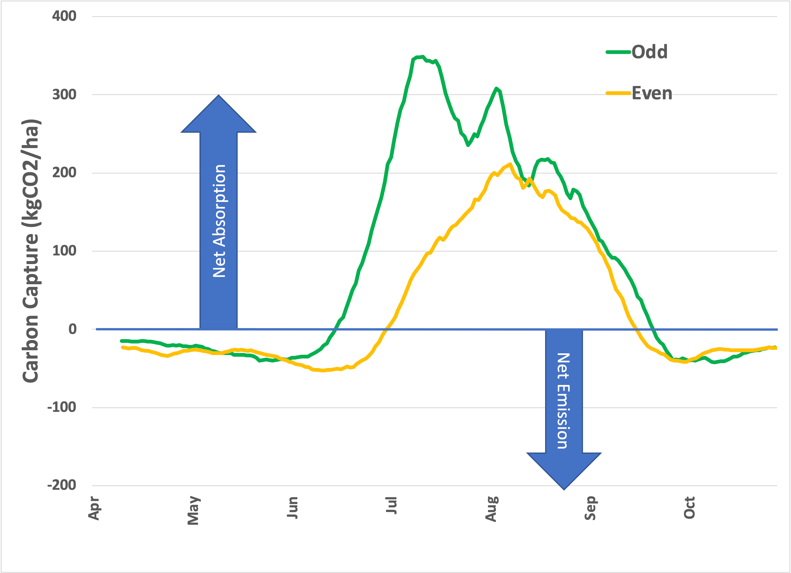
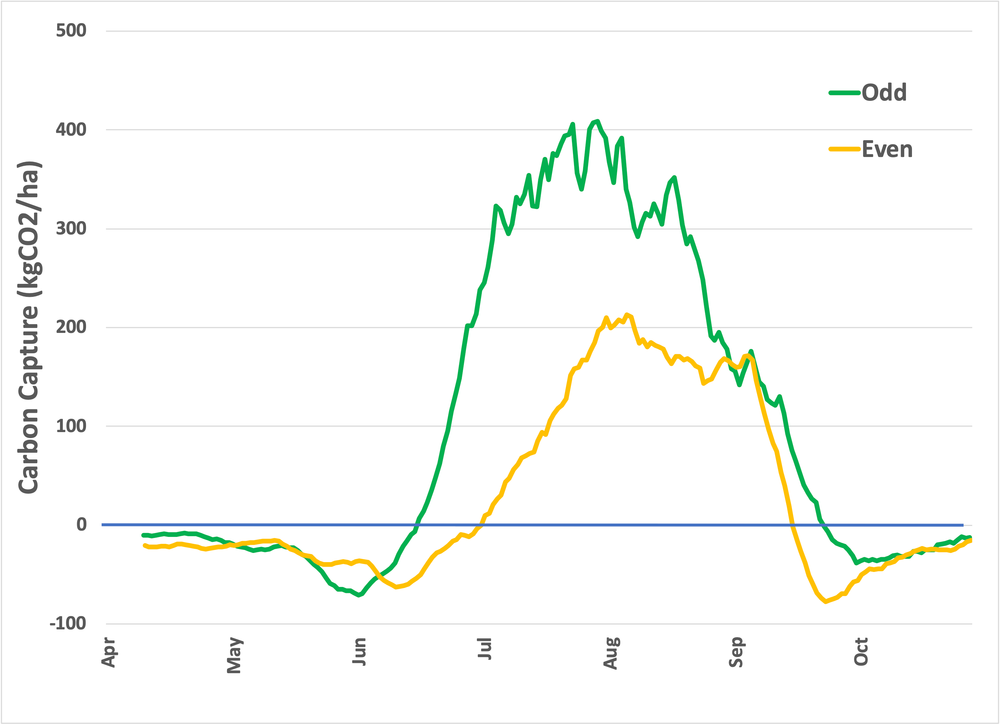

Apropos of this series, 1 a recent episode of John Oliver’s HBO Series, “Last Week Tonight,” did a number on Carbon Offsets and the concept of “economic” as opposed to “engineering” net zero. His show, per usual, did a deep dive on a newsworthy topic and came out with a compelling viewpoint. But Oliver is a comedian who invariably finds humor in the absurd, implicitly poking fun at those who hold opposing points of view. Nevertheless, I found the show’s facts largely accurate. I’m pointing it out here because some readers may find Oliver’s humor more compelling than my nerdy prose. And it’s entertaining.
For today, let’s finish up this series with a deep dive into agriculture in the US, as measured from a carbon absorption perspective.
The last installment ended with what some may regard as a surprising conclusion: Managed ecosystems such as cornfields sequester carbon substantially more efficiently than unmanaged ecosystems such as forests and grasslands. Before you start your next thought with, “But the experts say…”, I’m not claiming that I know more than the experts. But, experts are humans, too, and just like other humans, they can fall into groupthink, particularly when peer review is what has made them “experts” in the first place.
The data is the data. Everything else is interpretation.
Rather than relying on complex models, direct observations of the outcome (“net ecosystem efficiency” or NEE) measured as CO2 absorption directly in the field lead to the unavoidable conclusion that managed ecosystems are better. “Experts” need to explain that observation without resorting to accounting tricks to justify their assertions or support their publications!
Today, let’s look at different types of managed ecosystems to see if we can get even more clarity. Because the release of CO2 during the winter months is variable and may be spurious, let’s examine the daily values over a typical growing season from April 1 through October 31. This is the part of the year when the selected crop will have the highest impact on yearly carbon capture.
As it turns out, there are two ideal data sets to examine. Both data sets last for several years and look at a typical agricultural practice in the United States, known generally as the corn-soy rotation. In this practice, corn and soy are planted in alternating years in the same field to maintain soil health. As a result, we can compare data from the two crops directly without the usual ecological or geographic variables. One is a set of data 2 collected at one of my favorite research institutions, the University of Illinois, and (in part) by one of my favorite research scientists, Carl Bernacchi , who, long ago, explained the Eddy Flux Covariance method to me. His site is located in the middle of an Illinois field and looks like this from space:

It’s dead flat farmland, with nothing around to disrupt the readings. Here’s the data over 12 years of observation:

Corn and soy are planted in the spring and suck CO2 out of the air all summer. As the crop matures, the plant stores the carbon in the harvested grain, and capture slows. The carbon in the harvest is removed from the field for human use (and out of the observed area).
Is this situation unique to Illinois? The other data comes from a pair of sites 3 in Minnesota with the same rotation:


The data does not indicate which crop was grown in which year, but we can tell by observation that Field 1 was corn in odd-numbered years, while Field 5 was corn in even-numbered years. It’s the same pattern, possibly shifting toward a later start (and earlier end) to the growing season because of different latitudes.
Now, look at the vertical axes: During summer, every hectare of a cornfield (roughly the area of the photo above) captures around 400 kilograms of CO2 every day! Next, visualize a cube of dry ice about 2 feet on a side—that’s how much CO2 agriculture pulls out of the air every single day . [When planted with soybeans, the same area captures about half of that.] So, now we have an answer:
It matters that we plant, and it matters what we plant.
Why is corn a better crop for summer carbon capture than soybeans? Now we’re in my area of expertise, so I can put a stake in the ground as an expert for others to criticize. Biochemically, corn is a ‘C4’ plant, while soybean is a C3 plant. C4 plants are less energy efficient (but more carbon efficient) and thus tend to grow faster in direct sunlight when energy isn't limited. If you’ve ever seen crabgrass on a lawn, you’ll appreciate the difference: Crabgrass is also a C4 plant and aggressively takes over a lawn if uncontrolled. On the other hand, nearly all trees are C3. So, this observation also explains why agricultural lands appear better than forests. 4 As always, I welcome alternative explanations, but I'm sticking with mine for now.
It turns out that there is data for other C4 grasses in the database, so in the next issue, we’ll compare corn with sorghum and sugarcane, with the caveat that we’re looking at net carbon capture in ecosystems of different geographies.
Thank you for reading Healing the Earth with Technology. This post is public, so feel free to share it.
Many thanks to Will Regan, who pointed out what, in retrospect, was a pretty bad math error in the original post. This screwed up the figure axes and made some of the visualizations a bit less significant. While fixing that mistake, I found an additional data processing error.
Getting to this data took several steps and some Python programming, all available on request. For this set, the hourly data set was downloaded from the Ameriflux data repository here , [DOI: Tilden Meyers (2016), AmeriFlux US-Bo1 Bondville, Ver. 2-1, AmeriFlux AMP, (Dataset). https://doi.org/10.17190/AMF/1246036]. Each full 24-hour day, starting with January 1, 1996, and ending with December 31, 2008, was converted to µmol (CO2) per square meter by multiplying by the elapsed time (in seconds) of the measurement, then summed up and output to a file that Excel could handle. Finally, for each value, measured as the net (upward) flux of CO2 in micromoles per square meter per second, the absorption of kilograms of CO2 per hectare (100 m x 100 m) per day was calculated by multiplying by -0.0004401
Datasets: John Baker, Tim Griffis, Timothy Griffis (2018), AmeriFlux BASE US-Ro1 Rosemount- G21, Ver. 5-5, AmeriFlux AMP, (Dataset). https://doi.org/10.17190/AMF/1246092, and John Baker, Tim Griffis (2022), AmeriFlux BASE US-Ro5 Rosemount I18_South, Ver. 16-5, AmeriFlux AMP, (Dataset). https://doi.org/10.17190/AMF/1419508. The first dataset spans January 1, 2004, through December 31, 2016. The second is a field a couple of miles away from the first, with the dataset spanning January 1, 2017, through March 31, 2022.